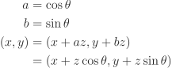
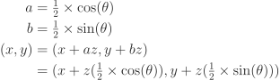
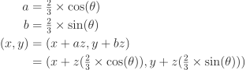
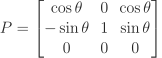
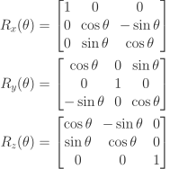

This article makes use of SVG images and the HTML canvas element, some older browsers are unable to support these features. Check your browser at html5test.com
Imagine you are in a situation where you have a 3D object you want to display. There are a number of ways this object can be displayed, I'm going to run you through the maths and code to do so.
This is one of the most basic projection techniques, it simply discards one of the axis information to create a two-dimensional representation of one of the faces, a fancy way of saying sides, of the object.
In the following, very interesting, example of a cube, the z-axis information is discarded to show the front face of the object.
I won't show the projections for the other faces, you'll just have to imagine what they would look like.
First, the vertices. These are the corner points for the cube, at this point there is no sense of scale so all of the values can simply be between -1.0 and 1.0 to keep it simple and easy to scale up later.
var vertices = [
new Vertex(-1.0, -1.0, -1.0), // Front-Bottom-Left
new Vertex( 1.0, -1.0, -1.0), // Front-Bottom-Right
new Vertex(-1.0, -1.0, 1.0), // Rear-Bottom-Left
new Vertex( 1.0, -1.0, 1.0), // Rear-Bottom-Right
new Vertex(-1.0, 1.0, -1.0), // Front-Top-Left
new Vertex( 1.0, 1.0, -1.0), // Front-Top-Right
new Vertex(-1.0, 1.0, 1.0), // Rear-Top-Left
new Vertex( 1.0, 1.0, 1.0) // Rear-Top-Right
];The code for a Vertex object:
function Vertex(x, y, z) {
this.x = function() {
return x;
};
this.y = function() {
return y;
};
this.z = function() {
return z;
};
}Then, the vertices are mapped into faces.
var faces = [
new Polygon([vertices[0], vertices[1], vertices[5], vertices[4]]), // Front
new Polygon([vertices[2], vertices[3], vertices[7], vertices[6]]), // Rear
new Polygon([vertices[0], vertices[1], vertices[3], vertices[2]]), // Bottom
new Polygon([vertices[4], vertices[5], vertices[7], vertices[6]]), // Top
new Polygon([vertices[0], vertices[2], vertices[6], vertices[4]]), // Left
new Polygon([vertices[1], vertices[3], vertices[7], vertices[5]]) // Right
];The code for a Polygon object:
function Polygon(vertices) {
this.count = function() {
return vertices.length;
};
this.vertex = function(i) {
if (i < 0) {
throw new Error('Vertex index must be a positive integer')
}
if (i >= vertices.length) {
throw new Error('Vertex index out of bounds');
}
return vertices[i];
};
}The code that runs the rendering.
var canvas = document.getElementById('my-canvas');
var context = canvas.getContext('2d');
// Make the cube half the width of the canvas
var size = canvas.width / 2;
var fx = function(vertex) {
return vertex.x() * size / 2;
};
var fy = function(vertex) {
return vertex.y() * size / 2;
};
// Makes 0 the center of the canvas
context.translate(canvas.width / 2, canvas.height / 2);
for (var i = 0; i < faces.length; ++i) {
drawPolygon(context, faces[i], fx, fy);
}The code that draws the polygons.
function drawPolygon(context, polygon, fx, fy) {
context.beginPath();
// The -1 * is used to flip the y coordinate as y value increases
// as you move down the canvas.
context.moveTo(fx(polygon.vertex(0)), -1 * fy(polygon.vertex(0)));
for (var i = 1; i < polygon.count(); ++i) {
context.lineTo(fx(polygon.vertex(i)), -1 * fy(polygon.vertex(i)));
}
context.closePath();
context.stroke();
}To draw a simple square that was a lot of hard work, this work will pay off later though!
This projection technique is a bit more complicated than the last example, but not by much. The z-axis is represented, to give a feel for the three-dimensional shape. Oblique projection is one form of parallel projection and mathematically can be described as:
The a and b terms specify the ratio to apply to z, different oblique projections use different ratios.
Cavalier projection is an oblique projection where the z length is preserved.
The following diagram is a Cavalier projection at an angle of 30°.
The length along the z axis is shortened by a half or two thirds to provide a more realistic representation of the proportions.
 The math expression above expressed in JavaScript:
var a = Math.cos(angle);
var b = Math.sin(angle);
var fx = function(vertex) {
return vertex.x() * a + vertex.z() * a;
};
var fy = function(vertex) {
return vertex.y() + vertex.z() * b - vertex.x() * b;
};The resulting projection:
Projection can also be expressed more elegantly using a transformation matrix.
The matrix is created using a simple Matrix class that supports 3 × 3 matrices:
var a = Math.cos(angle);
var b = Math.sin(angle);
return new Mat3([
a, 0, a,
-b, 1, b,
0, 0, 0
]);The resulting projection:
Using a matrix
Translation around multiple axis can be achieved simply by multiplying rotation matrices together to produce the transform matrix, which creates a traditional, roll, pitch, yaw rotation model.